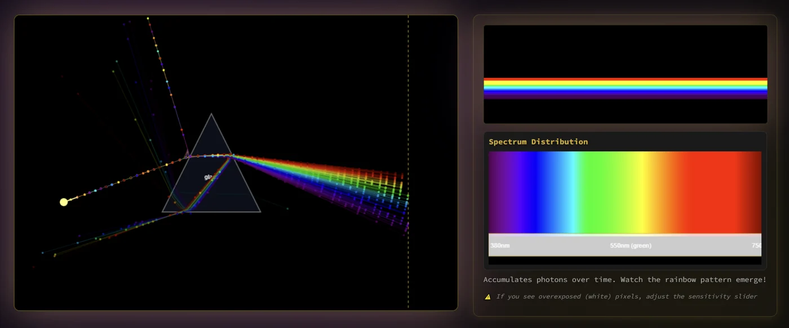

Spectral geometric optics
An optical bench designed for intuition: move the geometry and follow each wavelength through reflection, refraction and total internal reflection. Exaggerated dispersion makes the difference between RGB color and a spectrum easy to see; it is a visual foundation for the larger spectral renderers.
Explore connections
A visible wavelength-dependent path
A small optics bench makes one foundation of spectral transport concrete.
-
01
Sample a spectrum
Represent a broad source using wavelength-labelled rays.
-
02
Refract
Wavelength changes the refractive index and bending angle.
-
03
Split contributions
Reflection and transmission carry energy along different paths.
-
04
Read the sensor
Accumulate arrivals to see how the spectrum separates.
Color can change the path, not just its appearance
A conventional RGB renderer carries three color channels along a geometric path. Dispersion asks for something more: the refractive index depends on wavelength, so different parts of a spectrum follow different paths through the same material. This bench makes that distinction visible before a full renderer adds camera models, materials and many scattering events.
Colored moving particles represent sampled geometric rays. The display color is a wavelength-to-RGB illustration; it is not a simulation of wave interference or a calibrated colorimetric instrument.
One bench, several optical building blocks
Arrange prisms, lenses and reflective elements; follow how refraction changes a ray direction and how reflection and transmission divide its contribution. Start with a broad spectrum and a prism, then compare the paths with a narrow band of wavelengths.
The simplicity is deliberate: individual interactions stay visible. RadianceLab and Aperture put related wavelength-dependent transport into much larger rendering systems.
More recorded views · 2
Current scope
- A 2D geometric-optics illustration with an approximate wavelength display mapping; it does not solve diffraction, interference or polarization wave dynamics.